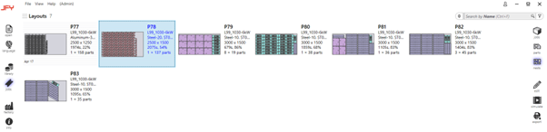
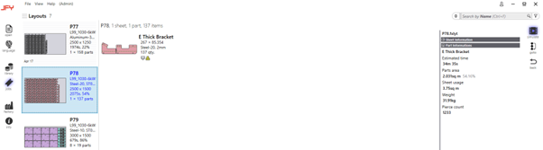
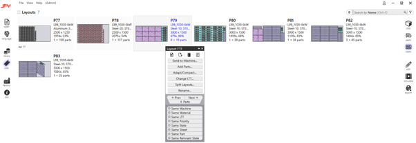

Layout-Ansicht
Wenn Sie die Option „Nest“ auswählen, wird eine Liste aller Nester angezeigt, die sich derzeit im aktuell ausgewählten Job befinden. Wenn Sie dort auf ein Nest doppelklicken, wird eine Aufschlüsselung angezeigt. Ein Klick auf das Nest mit der rechten Maustaste zeigt zusätzliche Optionen an.

Nach einem Doppelklick auf ein Nest sehen Sie zunächst die verwendeten Teile zusammen mit detaillierten Informationen über die verwendeten Materialien, die Zykluszeit und weitere Kennzahlen.

Sie können klicken, um durch die verschiedenen verfügbaren Nester zu scrollen. Wenn Sie auf ein Teil klicken, können Sie die gleiche Interaktion verwenden, die auch im Teilebereich erwähnt wurde.
Wenn Sie mit der rechten Maustaste auf ein Nest klicken, werden einige zusätzliche Optionen angezeigt.
 •\t„An Maschine senden“ gibt das Nest zur Produktion an die Maschinen frei. An diesem Punkt ändert sich die Nest-Option in „Von Maschine zurückrufen“. •\tMit „Teile hinzufügen“ können Sie zusätzliche Teile zum Nest hinzufügen. •\tMit „Anpassen/Verdichten“ können Sie einen Chargenwechsel für Materialien oder Maschinen durchführen, die im Nest verwendet werden. •\tWenn Sie die LTT ändern, können Sie eine andere Lasertechnologie auf das ausgewählte Material und die Dicke im Nest anwenden. •\tMit „Layouts teilen“ können Sie ein Nest mit mehreren Wiederholungen in ein neues Nest aufnehmen. •\tMit „Umbenennen“ können Sie das Nest umbenennen.